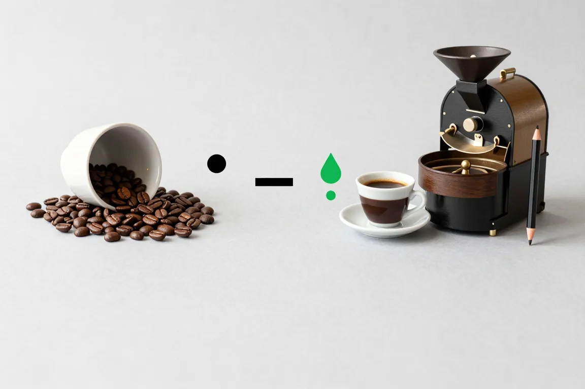

Et ansikt laget av tegnsetting og bokstaver, satt i en linje med vanlig tekst. Det kom fra oppslagstavler på 1980-tallet: det sidelengs :-) i Vesten og det oppreiste (^_^) i Japan.

Kjerneidé
Et ansikt trenger ikke et bilde: noen få tegn i én tekstskrift, i én farge, bærer en hel følelse.
Designprinsipper
Bygg hvert ansikt av 3 til 12 tegn i samme monospace-skrift, i én farge og én størrelse.
Sett ansiktet på en enkel bunn av #FFFDF5 med tekst i #1A1A1A, uten kant og uten fyll.
Hold ansiktet i linjen med teksten, på samme grunnlinje, med 1 mellomrom før og etter.
Bruk den oppreiste japanske formen (^_^) for øyne og munn, og den sidelengs vestlige formen :-) bare i korte chattelinjer.
Begrens én melding til 1 eller 2 ansikter; gjenta et tegn (^^^, !!!) opptil 3 ganger for å understreke.
Sett brødteksten i en mono-skrift på 16px med linjehøyde 1,6, og la ansiktet få samme størrelse.
Tegn ansiktene i en heltallig pikselstørrelse, uten kantutjevnet skalering over 200 %.
Antimønstre
Fargede emoji-bilder i stedet for tegn
Ansikter som trenger en bildeskrift for å vises
Gradienter, skygger og blanke fyll bak ansiktet
Mer enn 3 ansikter i én linje
Proporsjonale skrifter som ødelegger justeringen av ansiktet